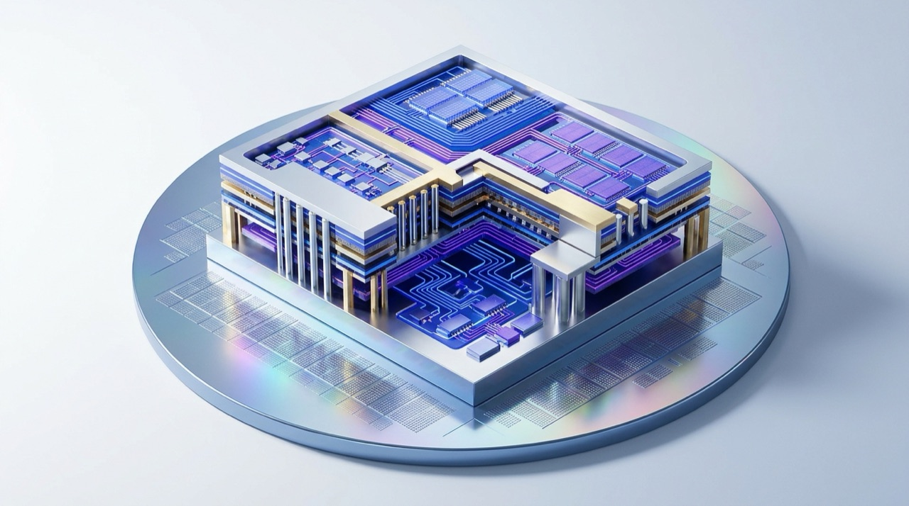

집적회로 (Integrated Circuits)
단일 소자의 한계를 넘어, 수많은 2차원 소자가 조화롭게 동작하는 웨이퍼 규모 집적회로를 구현합니다.

왜 중요한가요?
실험실에서 트랜지스터 1개가 잘 동작하는 것과 실제 칩이 작동하는 것은 완전히 다릅니다. 수천~수백만 개의 소자가 균일한 성능으로 인버터·논리 게이트·메모리·AI 어레이를 이루어 오류 없이 동작하도록 만드는 집적회로 기술이 상용화의 핵심 관문입니다.
ONE 1ab 핵심 연구 방향
- 2차원 반도체 기반 CMOS 논리 회로(인버터·논리 게이트·SRAM·디코더) 집적
- 소자 간 균일도·잡음 여유(noise margin) 최적화 및 SPICE 컴팩트 모델링
- 연산·메모리·센서를 한 칩에 수직 통합하는 모놀리식 3D 집적 아키텍처
핵심 작동 원리
- 상보형(CMOS) 논리 회로: 특성이 잘 맞물린 n형·p형 2차원 트랜지스터를 결합해 대기 전력 소모가 거의 없는 인버터·NAND/NOR 논리 게이트를 구현합니다.
- 수율·균일도 및 회로 모델링: 웨이퍼 전체의 소자 편차를 줄이고 SPICE 회로 모델을 정립해 대형 회로의 동작을 정확히 예측·설계합니다.
- 모놀리식 3D(M3D) 적층: 저온 공정이 가능한 2차원 소자의 장점을 살려 연산·메모리·센서 층을 수직으로 초근접 적층합니다.
기대 응용 분야
3차원 적층 SoC
연산·저장·감지 기능을 수직으로 통합한 초고밀도 차세대 칩
초박형 IoT 제어 칩
초저전력으로 구동되는 스마트 태그 및 무선 사물인터넷 칩
통합 AI 가속기
인공 시냅스 어레이와 주변 구동 회로를 일체화한 엣지 AI 칩